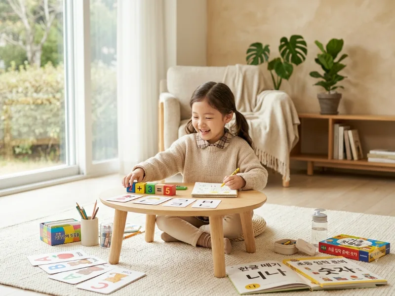
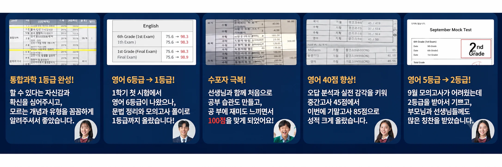

PRESCHOOL
유아
한글·수학·영어 기초와 학교생활 준비를 아이에게 맞는 속도로 진행합니다.
- 한글떼기·읽기쓰기
- 수 개념·기초수학
- 알파벳·기초 영어 표현
- 초등 입학 준비
학년·과목·현재 수준에 맞춘
1:1 맞춤수업
국어·영어·수학·과학·사회
검정고시·회화·코딩
상담 후 설명 방식과
수업 흐름을 먼저 확인
방문 또는 화상수업
선택 가능
학년마다 필요한 공부가 다릅니다. 아래는 일반적인 학습 목표이며, 실제 수업 방향은 학생 상황에 맞춰 정합니다.
학년별 수업 안내는 중학생과외 · 고등학생과외에서 볼 수 있습니다.

한글·수학·영어 기초와 학교생활 준비를 아이에게 맞는 속도로 진행합니다.
교과 기초를 탄탄히 하고 스스로 공부하는 습관을 만들어 갑니다.
과목별 개념 이해를 바탕으로 학교 내신과 시험 준비를 시작합니다.
내신과 수능 목표에 맞춰 과목별 학습 계획과 취약 단원을 관리합니다. 일반고·특목고·과학고·외고 학교 진도와 시험 일정에 맞춰 설계합니다.
한글떼기부터 초등 입학 준비까지
학교 진도부터 내신·수능까지
회화부터 읽기·쓰기까지
학생별 목표에 맞춘 특별과정
두 방식 모두 전문 과외 선생님이 학생과 1:1로 진행합니다. 학생의 상황에 맞는 방식을 골라보세요.
선생님이 학생의 집으로 찾아가 마주 앉아 진행하는 1:1 수업
각자의 공간에서 화상으로 연결해 실시간으로 진행하는 1:1 수업
맞춤 커리큘럼, 취약점 진단, 수업 현황 공유로 학생의 공부 과정을 함께 관리합니다.
학생의 현재 수준에 맞춰 부족한 부분을 집중적으로 보완합니다.
AI 진단 데이터로 취약 단원을 확인하고, 선생님이 1:1 수업에서 이를 함께 참고해 맞춤 문제와 학습 방향을 조정합니다. 부족한 개념은 선생님이 짚고 복습 방향을 안내합니다.
수업 후 피드백으로 학습 방향을 점검하고, 수업 내용과 이해도, 과제와 다음 계획을 학부모님과 공유합니다.
학생들이 자주 겪는 학습 고민과 1:1 수업에서 함께 바꿔 가는 과정을 사례로 정리했습니다.
영어에 자신이 없던 학생이 틀린 문제를 선생님과 하나씩 정리하면서, 문제를 푸는 방법을 조금씩 익혀 간 사례입니다.
수학 문제 앞에서 막막해하던 학생이 수업에서 풀이 순서를 정리하는 습관을 들이며, 시험 때의 긴장을 줄여 간 사례입니다.
혼자 공부할 때 무엇부터 해야 할지 몰랐던 학생이 매주 학습 계획을 함께 세우며 공부 습관을 만들어 간 사례입니다.
모르는 개념과 문제 유형을 하나씩 짚어 가며 공부하면서, 스스로 할 수 있다는 자신감을 키워 간 사례입니다.
※ 위 내용은 학습 사례를 참고해 재구성한 예시이며, 학생·학부모가 직접 작성한 후기가 아닙니다. 학생마다 수업 과정과 결과는 다를 수 있습니다.

학년별 1:1 방문과외 수업료의 시작 금액을 안내합니다.
| 수업 방식 | 초등학생 | 중학생 | 고등 1·2학년 | 고등 3학년·성인 |
|---|---|---|---|---|
| VISIT방문과외한 달 주 2회 · 1회 60분 기준 | 월256,000원부터 | 월296,000원부터 | 월336,000원부터 | 월376,000원부터 |
모든 학년의 기본 수업료는 주 2회, 1회 60분, 월 8회 기준입니다. 학년별 시작 수업료를 확인하신 후 상담을 통해 수업 조건과 최종 금액을 안내받으실 수 있습니다.
학생의 학년·과목·목표를 확인합니다.
현재 수준과 목표에 맞춰 수업 방향을 정합니다.
학생에게 맞는 전문 과외 선생님을 안내합니다.
정식 수업에 앞서 무료 시범수업으로 수업 방향을 함께 점검합니다.
시범수업 후 진행 여부를 결정하시면 학생에게 맞춘 1:1 수업을 시작합니다.
과외마루 선생님들의 학력·지도 경험·수업 스타일은 선생님 소개에서 먼저 살펴보실 수 있습니다.

방문과외·화상과외 상담 전에 학부모님이 자주 물어보시는 내용을 정리했습니다.
정식 수업 전에 무료 시범수업을 진행합니다. 학년과 학습 수준을 확인한 후 학생에게 맞는 1:1 수업 방향을 안내해드립니다.
무료 시범수업 신청